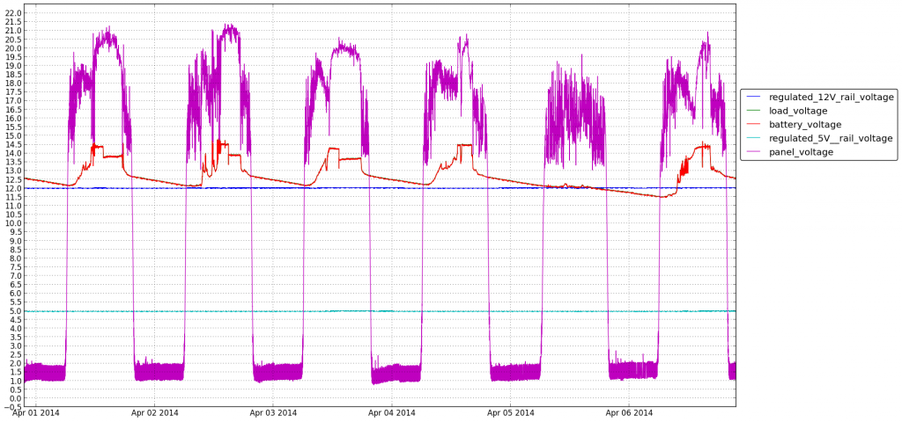

Adding voltage and current measurements to the sunpowered Pi
Remember my sunpowered Pi installation on the balcony ? The only indication I had, since recently, on how well the system is doing was an LED blinking red when battery was low. Not really helpful in making predictions or making measurements over the time. I've searched for simple ADC solution to hook up into Pi and allow for some voltage and power measurements. I've decided on ADC Pi, as it seemed very straightforward in its design and also comes with example python code. Did I say Python ?! I must admit that it is not at the top of my favourite languages list. But then I had fun. It turned out that Python has excellentgraph plotting library as well as it is very well equipped with general purpose functions and hardware specific stuff support, like i2c. But back to the system design. The panel itself can generate up to about 30V under no load. Battery is 12V nominal but can get to 14.5V when charging, the specs say. ADC Pi however, can measure up to 5V. You have some resistors laying around you say ? Voltage divider it is. For current measurement I've used hall effect sensor module from Pololu. Summarising, I have 8 measurement lines, hooked up as follows:
- unused :D
- voltage of the power line from Pi to current sensor
- panel voltage
- battery voltage
- load voltage
- regulated 12V rail voltage
- regulated 5V rail voltage
- current sensor reading voltage
It turned out that for the current measurement to be accurate I can't trust the voltage coming from the Pi to be stable. I actually measure that and use that to calculate the real reading. The docs round the hall sensor are not that obvious at the first sight, so here's the formula I came up with, for the greater good:
current = (measured_sensor_voltage - (voltage_powering_sensor/2))/0.185
Finally, sprinkle all of the above with some python and get the following: 
Looking at this you can spot 2 things. One - April the 5th was supercloudy superrainy and the battery did not get much charge. And the second being that on the average day the battery gets to the full capacity near the half of the sunny period. This is the data I was after ! I think this means that I can add more batteries to the system and on a sunny day they will get filled up and this should suffice for couple of rainy days in a row. Here, get some photos as the bonus, also:
TODOs, for me, and everyone else, to remember that nothing is ever finished in the realm of hobby stuff:
- add graph for power usage
- would be super cool to add the weather data to the graphs
- clean up python stuff, add more unit tests there
- write next post on the above ;)


{kind=link}
{kind=link}
{kind=link}
{kind=link}